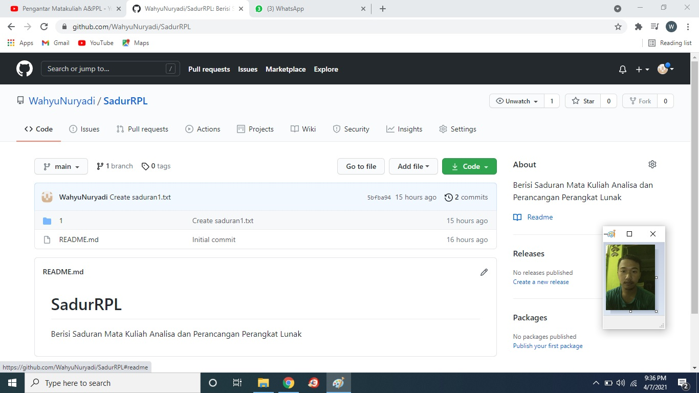

NAMA : Wahyu Nuryadi
NIM : 1811500083
KELOMPOK : TI6J
Hasil yang dapat saya sadurkan :
1) Penjelasan tentang Perkenalan, tata tertib perkuliahan, kontrak perkuliahan
2) Belajarlah beretika dalam berkomunikasi dengan siapa saja
3) Jika kita meminta tolong pada seorang dan orang itu ahli di bidangnya tolong percayalah apa yang mereka katakan
4) Jangan pura - pura lupa atau tidak tau atas apa yang telah kita lakukan atau kerjakan
5) Jangan melakukan percakapan menggantung atau tidak sampai tuntas kepada yang kita tanyakan, sehingga kesannya kita tidak menghargai orang yang kita tanyakan
6) Perkuliahan dimulai tanggal 5 April 2021 dengan tetap mematuhi protokol kesehatan 5M
7) Khusus untuk mahasiswa di Matakuliah Analisa dan Perancangan PL:dihimbau untuk tidak memasuki area kampus, kecuali ada kegiatan lain (seperti bimbingan, urusan administrasi dan instalasi software)
8) Sebagai seorang mahasiswa ataupun pribadi sendiri kita harus Cerdas dan Berjiwa Luhur
9) Penjelasan tentang skenario perhitungan nilai kehadiran
10) Membuat akun github
11) Membuat repository di github
12) Setiap pertemuan diharuskan untuk membuat saduran sebagai absensi kehadiran dan penilaian tugas
13) Membuat kelompok sejumlah 3 orang per kelompok untuk mempresentasikan apa yang telah dikerjakan
14) UTS mahasiswa akan dinilai secara individu terkait materi UML
15) Penjelasan tentang bagaimana cara menggunakan github
16) Persiapan untuk menghadapi KP
17) Penjelasan tentang Judul Mata Kuliah Mata Kuliah Analisa dan Perancangan Perangkat Lunak
